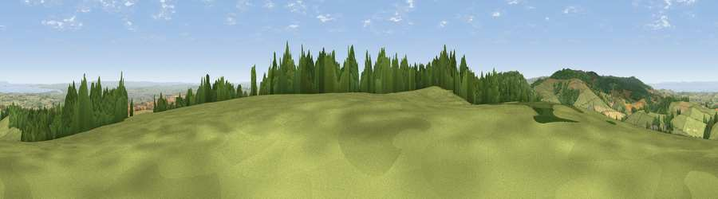

Broomfield Hill
#2517 in England · top 9% of its area beats it · near BroomfieldThe view, rendered

A 360° render of this exact spot computed from the terrain model, tree cover and land cover — summer colours, afternoon light, calibrated against photographs of famous viewpoints. Real trees, hedges and buildings will differ in detail.
The panorama
Grey silhouette: terrain skyline in each direction (720 bearings, Earth curvature and refraction included). Dashed green: skyline with trees (+15 m) and buildings (+8 m) as obstacles. Blue strip: how far the ground is visible on each bearing.
Where the view opens
Wedge length = distance to the farthest visible ground on that bearing (vegetation-aware). Rings at 10, 25 and 50 km.
What fills the view
53% grassland · 27% woodland · 15% cropland · 4% water · 2% built-up
Angular shares of the visible panorama (visual magnitude), not map area. Landscape diversity 0.51 (0–1 Shannon).
Key numbers
More beautiful places nearby
The staircase of upgrades: each row has a higher view potential than everything closer. Driving times are estimates from straight-line distance, calibrated against real road routing — check an actual route before setting out.
| Place | Direction | Drive | Score |
|---|---|---|---|
| Viewpoint near Broomfield | ESE · 2 km | ~5 min | 76.0 |
| Cothelstone Hill | WSW · 2 km | ~6 min | 82.1 |
| Viewpoint near West Bagborough | WNW · 4 km | ~9 min | 84.3 |
| Wills Neck | WNW · 5 km | ~12 min | 85.7 |
| Viewpoint near Holford | NW · 10 km | ~20 min | 85.9 |
| Viewpoint near West Quantoxhead | NW · 12 km | ~22 min | 87.8 |
| Viewpoint near West Quantoxhead | NW · 13 km | ~24 min | 88.7 |
| The Knoll | SE · 56 km | ~77 min | 91.0 |
51.09327, -3.12268 · source: dobih hill · position refined by local search. Computed location — check access rights before visiting.